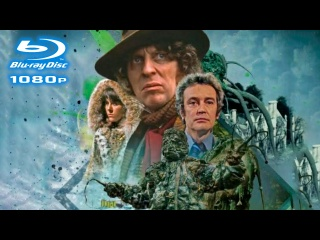
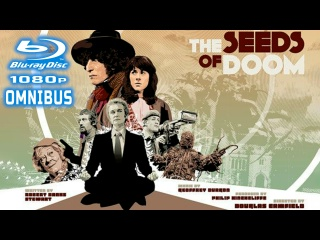
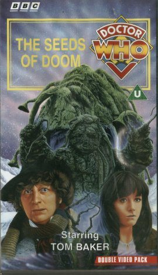
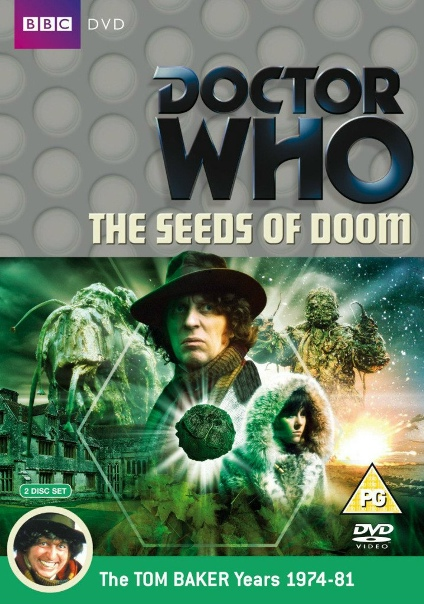
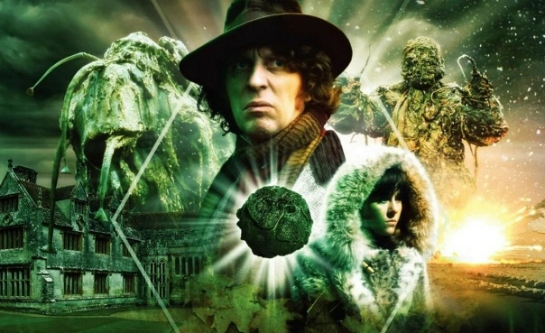
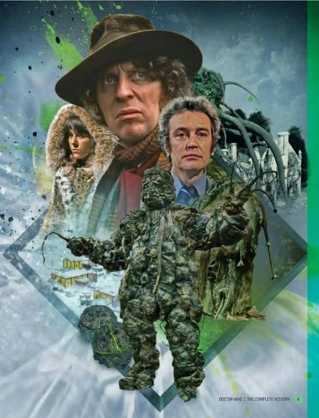
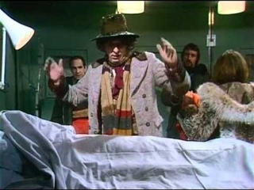

Субтитры: Русские и Английские |  |
|---|---|
Субтитры: только Английские |  |
с обновлением визуальных эффектов (cunningmunki) Субтитры: отсутствуют |
The Seeds of Doom
Дата выхода: 31 января - 6 марта 1976
Формат: 6 эпизодов по 25 мин.
|
ТАРДИС откликается на сигнал из Антарктиды, где экспедиция учёных обнаружила в вечной мерзлоте странные капсулы инопланетного происхождения. Доктор и Сара Джейн успевают слишком поздно: одна из капсул уже раскрылась, и её содержимое начало поглощать человека, превращая его в нечто растительное и враждебное. Нить расследования ведёт в Англию, к богатому ботанику Харрисону Чейзу, одержимому идеей превосходства растений над людьми. Дебют кринойдов — расы, для которой вся животная жизнь лишь удобрение, — а серия балансирует между боди‑хоррором и экологической катастрофой, закрывая сезон на мрачной ноте.
 VHS - август 1994 |  DVD - 25 октября 2010 |  Blu-ray - 20 октября 2025 * Версия в нашей группе |
|---|


